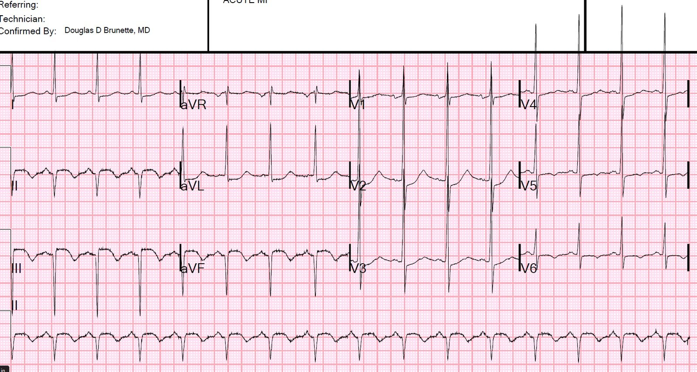
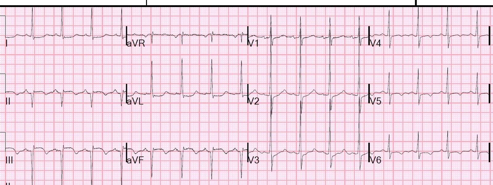
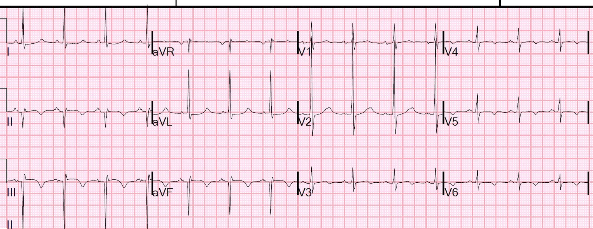
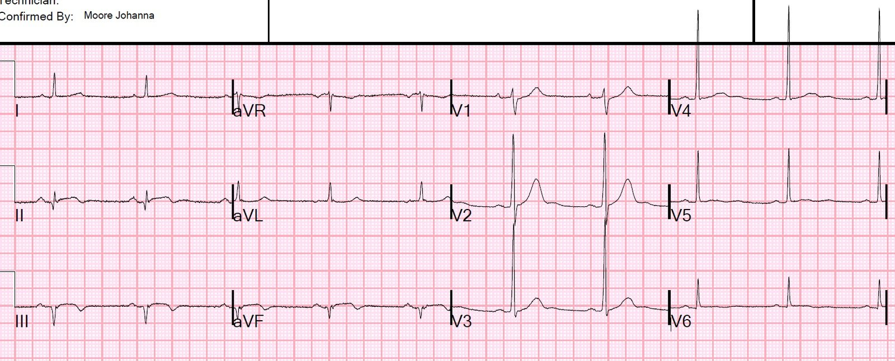
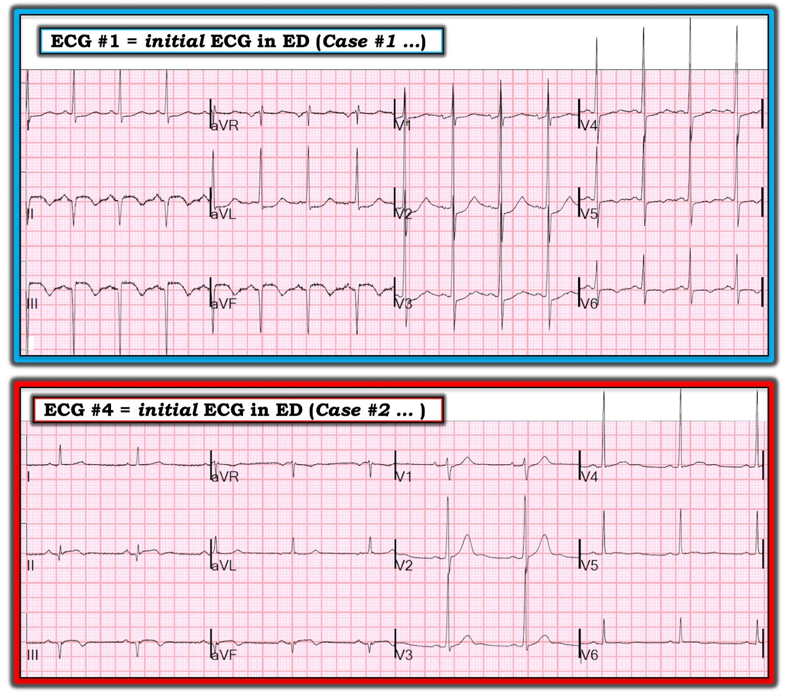

05/07/2019 — Nhồi máu cơ tim cấp, khởi phát đau 24-48 giờ trước. Bệnh nhân có nên được chụp mạch vành/PCI cấp cứu?
Bản dịch tiếng Việt của bài "Acute MI, pain onset 24-48 hours ago. Should the patient go for emergent angiogram/PCI?" – Dr. Smith’s ECG Blog. Giữ nguyên toàn bộ 8 hình ảnh của bản gốc.
Ca 1.
Một người đàn ông 60 mấy tuổi có tăng huyết áp (HTN), đái tháo đường (DM) và rối loạn lipid máu đến viện, kể rằng ông bị đau ngực bắt đầu từ 48 giờ trước khi đến. Cơn đau ở sau xương ức, không lan, kèm vã mồ hôi.
Ông cho biết các triệu chứng có suốt cả ngày. Lúc đó ông không để tâm nhiều đến cơn đau và đã uống một ít acetaminophen nhưng không đỡ mấy.
Ông đã có cảm giác khó chịu tương tự 1 ngày trước khi đến viện.
Có vẻ như cơn đau không liên tục.
Bệnh nhân phủ nhận từng bị đau ngực trước đợt này. Không có tiền sử bệnh tim.
Bệnh nhân không đau ngực vào thời điểm đến viện.
Đây là điện tâm đồ lúc phân loại (triage) của ông:


Có ST chênh lên ở thành dưới kèm ST chênh xuống soi gương (reciprocal) ở aVL và I. Có ST chênh xuống ở V2-V4. Vậy đây là STEMI dưới-sau.
Tuy nhiên, có sóng QS sâu ở II, III, aVF và sóng R rất cao ở V1-V3. Tại sao?
Điện tâm đồ này hoàn toàn phù hợp với bệnh sử đau 48 giờ, vì đây là một STEMI bán cấp điển hình. Đã có nhồi máu hoàn tất. Các sóng R cao thực chất là sóng Q của thành sau khi được ghi từ các chuyển đạo phía trước. [Với những người theo trường phái thuần túy, các sóng R cao này thực ra biểu hiện nhồi máu thành “bên”, (xem Bayes de Luna; Journal of Electrocardiology 41 (2008) 413–418.)]
Troponin I ban đầu trả về là 11.0 ng/mL. Đây là mức troponin ban đầu rất điển hình cho một STEMI bán cấp. Người ta dự đoán rằng sau khi động mạch được mở thông và lượng troponin bị “mắc kẹt” được giải phóng, troponin sau PCI sẽ cao hơn nhiều.
Có ST chênh lên đáng kể.
Phòng thông tim (cath lab) đã được kích hoạt dù triệu chứng đã hết. Việc đó có cần thiết không?
Chụp mạch vành
Có 2 thủ phạm (“đồng thủ phạm” – co-culprits):
1. Hẹp 99% RCA đoạn giữa, kèm hẹp dài 90% ở lỗ xuất phát và đoạn gần của RPDA (động mạch liên thất sau phải).
2. Ngoài ra còn hẹp dài 99% ở động mạch mũ trái (LCx) đoạn xa và nhánh bờ tù thứ 2 (OM2).
Cả hai tổn thương đều được mở thông và đặt stent.
Điện tâm đồ sau PCI, ngày hôm sau:


48 giờ


Siêu âm tim:
Phân suất tống máu thất trái (LVEF) giảm đáng kể (35-40%) trên siêu âm tim qua thành ngực (TTE), với rối loạn chức năng vùng rộng ở thành dưới và dưới-bên (+ mỏm).
Một STEMI được tái tưới máu sớm có thể có những dấu hiệu siêu âm tim như vậy do choáng cơ tim (myocardial stunning) có hồi phục, rồi sau đó phục hồi phần lớn hoặc gần như toàn bộ chức năng trong những tuần tiếp theo.
Ngược lại, trong trường hợp nhồi máu xuyên thành đã hoàn tất, như được chứng minh bởi sóng Q (và sóng R cao biểu thị nhồi máu thành bên), chức năng kém và rối loạn vận động thành nhiều khả năng sẽ vĩnh viễn.
May mắn là ông không xuất hiện dấu hiệu hay triệu chứng suy tim rõ rệt nào trong thời gian nằm viện, nhưng đã được bắt đầu dùng thuốc ức chế men chuyển (ACE inhibitor).
Ca 2.
Một bệnh nhân nam 70 mấy tuổi, tiền sử (PMH) tăng huyết áp (HTN), rối loạn lipid máu (HLD), đái tháo đường típ 2 (DM2), đến viện vì mệt mỏi khó chịu. Vào ngày hôm trước, ông bị cảm giác khó chịu ở ngực kiểu “bóp nghẹt” và vã mồ hôi nhiều trong khoảng 1330-1500, kèm theo choáng váng. Ông về nhà nghỉ ngơi.
Vào ngày nhập viện, ông bị đau đầu vùng chẩm, đau bụng vùng thượng vị mơ hồ và nôn hai lần, không có máu.
Lúc phân loại (triage), đây là điện tâm đồ của ông:
Ông không đau ngực khi đến viện.
Một điện tâm đồ được ghi lúc phân loại:


Đã có nhồi máu đáng kể, đã hoàn tất.
Hình ảnh “dạng vòm” (coving – lồi lên trên kèm ST chênh lên nhẹ và sóng T đảo ngược) ở các chuyển đạo thành dưới có giá trị chẩn đoán nhồi máu cơ tim thành dưới, và cùng với sóng Q và sóng T đảo ngược, là điển hình của nhồi máu cơ tim bán cấp.
Troponin I ban đầu (về sau hóa ra cũng là giá trị đỉnh) là 39.5 ng/mL.
Chụp mạch vành sáng hôm sau
Vì ổ nhồi máu đã xảy ra từ hôm trước và bệnh nhân không có triệu chứng lúc đến viện, ông không được chụp mạch vành cấp cứu. Ông được chụp vào ngày hôm sau.
Có tắc bán cấp 100% động mạch mũ đoạn giữa. Tổn thương được mở thông và đặt stent.
Siêu âm tim:
Giảm chức năng tâm thu thất trái - mức độ nhẹ.
Phân suất tống máu thất trái ước tính là 40-45%.
Rối loạn vận động thành khu trú - thành dưới.
Rối loạn vận động thành khu trú - thành dưới-bên.
Bàn luận
STEMI bán cấp nào nên được đưa đến phòng thông tim?
Nói đơn giản:
NẾU có STEMI bán cấp theo điện tâm đồ hoặc theo tiêu chuẩn khác VÀ:
1. Triệu chứng khởi phát trong vòng 48 giờ VÀ
2. Có triệu chứng dai dẳng HOẶC ST chênh lên dai dẳng
Thì bệnh nhân nên được chụp mạch vành/PCI cấp cứu.
Tôi nghĩ việc mở rộng mốc này ra quá 48 giờ là hợp lý vì thiếu máu cục bộ có thể ngắt quãng đến như vậy.
Schomig và cs. đã phân nhóm ngẫu nhiên các bệnh nhân STEMI có:
Triệu chứng 12-48 giờ
Không có triệu chứng dai dẳng
ST chênh lên dai dẳng
Không mất ổn định huyết động hay mất ổn định điện học, không phù phổi
Những bệnh nhân được PCI cấp cứu có kích thước ổ nhồi máu thất trái trung vị nhỏ hơn đáng kể (8% so với 13%, p=0.001) khi đo bằng chụp cắt lớp vi tính phát xạ đơn photon (SPECT), cũng như giảm (không có ý nghĩa thống kê nhưng nghiên cứu không đủ lực mẫu) tiêu chí gộp tử vong, tái nhồi máu hoặc đột quỵ tại thời điểm 30 ngày (4.4% so với 6.6%, p=0.37).
Bệnh nhân thứ nhất không có triệu chứng nhưng có ST chênh lên dai dẳng (và ST chênh xuống của nhồi máu thành sau, vốn là hình soi gương của ST chênh lên thành sau), nên có chỉ định chụp mạch vành cấp cứu. Tính đúng đắn của quyết định này phần nào được chứng minh bởi troponin tăng vọt sau khi mở thông động mạch và ST chênh lên hồi phục sau PCI.
Bệnh nhân thứ 2 có CẢ đoạn ST đã hồi phục (không có ST lệch khỏi đường nền) và không có triệu chứng dai dẳng, nên có thể trì hoãn chụp mạch vành. Việc không có chỉ định chụp mạch vành cấp cứu được củng cố khi nhìn lại bởi troponin không tăng sau khi mở thông động mạch.
Tóm tắt: nếu có bằng chứng thiếu máu cục bộ đang tiếp diễn HOẶC về triệu chứng HOẶC trên điện tâm đồ, STEMI bán cấp nên được đưa đến phòng thông tim cấp cứu.
Nếu có bất kỳ mất ổn định huyết động hay mất ổn định điện học nào, hoặc phù phổi, bệnh nhân nên được chụp cấp cứu.
Nếu không có cả hai, có thể chờ.
Tài liệu tham khảo:
Schomig, A., J. Mehilli, D. Antoniucci, G. Ndrepepa, C. Markwardt, F. Di Pede, S. G. Nekolla, và cs. 2005. “Mechanical Reperfusion in Patients with Acute Myocardial Infarction Presenting More than 12 Hours from Symptom Onset: A Randomized Controlled Trial.” JAMA: The Journal of the American Medical Association 293 (23): 2865–72. http://www.ncbi.nlm.nih.gov/entrez/query.fcgi?cmd=Retrieve&db=PubMed&dopt=Citation&list_uids=15956631.
Với những ai muốn phân tích điện tâm đồ chi tiết hơn nữa, xem các bình luận của Ken Grauer bên dưới:

===================================
Bình luận của KEN GRAUER, MD (5/7/2019):
===================================
2 ca trong bài ECG Blog hôm nay minh họa việc đối chiếu với Bệnh sử giúp ích nhiều đến mức nào cho việc diễn giải lâm sàng các điện tâm đồ trong Ca bệnh này.
- Tôi tập trung vào việc đọc điện tâm đồ của bản ghi tại khoa cấp cứu (ED) ban đầu ở mỗi ca (Hình 1).


THỬ THÁCH Bổ sung: BẠN cần nhận ra được ít nhất 4 dấu hiệu điện tâm đồ khác nhau và quan trọng khi đánh giá điện tâm đồ #1. Đó là những dấu hiệu nào?
- GỢI Ý: Bạn có nhiều khả năng sẽ bỏ sót ít nhất một trong các dấu hiệu quan trọng này NẾU bạn không dùng một cách tiếp cận hệ thống …
SUY NGHĨ CỦA TÔI về Điện tâm đồ #1 — Bệnh nhân trong Ca #1 là một người đàn ông 60 mấy tuổi có tăng huyết áp và đái tháo đường, đến viện vì đau ngực từng cơn trong 48 giờ trước khi đến khoa cấp cứu. Ông không bị đau ngực vào thời điểm ghi bản ghi ban đầu tại khoa cấp cứu ( = Điện tâm đồ #1 trong Hình 1):
- Nhịp xoang tần số ~95/phút.
- Khoảng PR bình thường — và phức bộ QRS hẹp. QTc có vẻ ít nhất là hơi kéo dài, dù việc đánh giá thời khoảng QTc khó hơn (và thường ít hữu ích hơn) khi tần số tim trên 90-100/phút.
- Có LAD rõ rệt (Left Axis Deviation – trục lệch trái) — bằng chứng là tất cả các phức bộ đều âm ở mỗi chuyển đạo thành dưới.
- Có chắc chắn tiêu chuẩn điện thế của LVH. Điều này rõ nhất ở chuyển đạo aVL (biên độ sóng R rõ ràng lớn hơn nhiều so với tiêu chuẩn R≥12 mm) — nhưng điện thế tăng cũng được thể hiện qua các sóng R rất cao ở chuyển đạo ngực. (BẤM VÀO ĐÂY — để xem các tiêu chuẩn LVH mà tôi ưa dùng).
Về Thay đổi Q–R–S–T:
- Như đã nêu — có các phức bộ QS sâu ở mỗi chuyển đạo thành dưới. Không thấy sóng Q nào khác.
- Có Sóng R Cao ở Chuyển đạo V1. Tôi đo được 13 mm cho sóng R chiếm ưu thế ở chuyển đạo V1 — so với chỉ 3 mm cho sóng S ở chuyển đạo này. (BẤM VÀO ĐÂY — để Ôn tập các Nguyên nhân Thường gặp của sóng R Cao ở Chuyển đạo V1).
- Về Thay đổi ST-T — Mỗi chuyển đạo thành dưới đều có ST chênh lên dạng vòm (coved) 2-3 mm, theo sau là sóng T đảo ngược khá sâu, đối xứng. ST chênh xuống soi gương thấy ở chuyển đạo aVL > chuyển đạo I. Ở các chuyển đạo ngực — ST chênh xuống tối đa ở chuyển đạo V2 — nhưng cũng có ở các chuyển đạo V1, V3, V4 — kèm ST-T dẹt (và sóng T đảo ngược nông) ở các chuyển đạo V5,V6.
BÌNH LUẬN / Nhận định Lâm sàng: Để trả lời THỬ THÁCH tôi đặt ra ở trên — 4 dấu hiệu quan trọng ở điện tâm đồ #1 là: i) Nhồi máu cơ tim cấp gần đây; ii) LAD rõ rệt (phù hợp với LAHB = Left Anterior HemiBlock – blốc phân nhánh trái trước); iii) LVH; và, iv) Sóng R Cao ở Chuyển đạo V1.
- Mỗi dấu hiệu này đều quan trọng và có liên quan đến ca bệnh này. Xét Bệnh sử ( = đau ngực mới xuất hiện, bắt đầu từ 48 giờ trước và từ đó đến nay đau từng cơn — nhưng không có đau vào thời điểm điện tâm đồ #1 được ghi) — bệnh cảnh lâm sàng tổng thể là hợp lý.
- Rất hiếm khi thấy các phức bộ QS sâu như vậy ở mỗi chuyển đạo thành dưới như trên điện tâm đồ #1. Thường gặp hơn nhiều là bạn sẽ thấy ít nhất một chút hoạt động sóng R ở ít nhất một hoặc hai chuyển đạo thành dưới (như chúng ta thấy trên điện tâm đồ #2). Dù vậy — kết luận không thể tránh khỏi là rất có thể có cả LAHB lẫn Nhồi máu cơ tim thành dưới trên điện tâm đồ #1.
- Biên độ sóng R vượt xa tiêu chuẩn LVH ở chuyển đạo aVL (đồng thời cũng khá lớn ở khắp các chuyển đạo trước tim). Khi chưa xem được bản ghi cũ của bệnh nhân này — tôi thấy không thể loại trừ một phần vai trò của “tăng gánh” thất trái (hoặc một hình ảnh “tương đương tăng gánh” (strain equivalent)) đối với ST chênh xuống mà chúng ta thấy ở chuyển đạo aVL. Với tiền sử đái tháo đường và tăng huyết áp — kết luận không thể tránh khỏi là có LVH.
- Việc nhận ra dấu hiệu sóng R chiếm ưu thế ở chuyển đạo V1 cần khiến ta nghĩ đến các chẩn đoán phân biệt mà chúng tôi đã ÔN TẬP TRƯỚC ĐÂY. Với cơn đau ngực mới xuất hiện (đã kéo dài 48 giờ tại thời điểm đến viện) và các dấu hiệu ở chuyển đạo chi mô tả ở trên — chúng ta phải giả định rằng sóng R cao ở V1 là hậu quả của nhồi máu thành sau đi kèm.
- ĐIỀU CỐT LÕI: Theo Dr. Smith — các dấu hiệu trên điện tâm đồ #1 phù hợp với một STEMI dưới-sau bán cấp. Mặc dù sóng Q của nhồi máu cấp có thể hình thành chỉ trong vòng 1-2 giờ — sự hình thành các phức bộ QS sâu ở các chuyển đạo thành dưới và sóng R chiếm ưu thế của nhồi máu thành sau mà chúng ta thấy ở chuyển đạo V1 nói chung cần nhiều thời gian hơn thế để hình thành (tức là, thường ít nhất 12-48 giờ). Tương tự, sóng T đảo ngược khá sâu ở các chuyển đạo thành dưới thấy ở đây thường cũng cần một khoảng thời gian để hình thành. Tuy vậy, ở các chuyển đạo thành dưới của điện tâm đồ #1, ST chênh lên đáng kể ( = 2-3 mm) vẫn tồn tại — đó (theo Dr. Smith) là lý do đưa bệnh nhân này đi thông tim ngay cả 48 giờ sau thời điểm có lẽ đã khởi phát biến cố cấp.
- T.B. (P.S.) — Như tôi đã nhấn mạnh nhiều lần trong các bài blog điện tâm đồ này — lý do phổ biến nhất mà tôi thấy khiến những bác sĩ lâm sàng có năng lực bỏ sót các dấu hiệu quan trọng chỉ đơn giản là không thường xuyên sử dụng một Cách tiếp cận Hệ thống khi đọc mọi bản ghi mà họ gặp (BẤM VÀO ĐÂY — để xem Hệ thống mà tôi ưa dùng).

SUY NGHĨ CỦA TÔI VỀ ĐIỆN TÂM ĐỒ #2 — Bệnh nhân trong Ca #2 là một người đàn ông 70 mấy tuổi bị đau ngực “như bị đè nghiến” vào ngày trước khi ông đến khoa cấp cứu (ED). Ông không đau ngực vào thời điểm ghi bản ghi ban đầu tại ED ( = Điện tâm đồ #2 trên Hình 1):
- Nhịp là nhịp chậm xoang, tần số ~55-60/phút.
- Tất cả các khoảng (PR/QRS/QTc) đều bình thường.
- Trục mặt phẳng trán lệch về bên trái — nhưng không lệch trái đủ để đạt tiêu chuẩn LAHB. Nghĩa là — vì phức bộ QRS ở chuyển đạo II có vẻ dương nhiều hơn âm, ít nhất là một chút — trục mặt phẳng trán ít âm hơn -30 độ, vốn là mức tối thiểu cần có để LAD được xếp là LAHB. Ngoài ra — hình thái QRS (dạng QR thay vì rS) ở chuyển đạo II phù hợp với nhồi máu thành dưới, nhưng không phù hợp với hình ảnh thường thấy trong LAHB.
- Không có lớn buồng tim.
Về Thay đổi Q–R–S–T:
- Có sóng Q lớn ở mỗi chuyển đạo thành dưới. Các sóng Q sâu ở chuyển đạo III và aVF dường như được theo sau bởi một sóng r rất nhỏ. Xét đến biên độ QRS nhỏ như thế nào ở chuyển đạo II — sóng Q sâu 2 mm ở chuyển đạo này (chiếm ~40% sóng R ở chuyển đạo II) đủ tiêu chuẩn là một sóng Q “lớn”.
- Vùng chuyển tiếp xảy ra sớm trên điện tâm đồ #2 — với sự xuất hiện đột ngột của một sóng R chiếm ưu thế ngay từ chuyển đạo V2. Mặc dù không có sóng R chiếm ưu thế ở chuyển đạo V1 — sự thay đổi rõ rệt về vùng chuyển tiếp thấy ở đây cần khiến ta nghĩ đến những bệnh lý tương tự như đã đề cập ở Ca #1 đối với sóng R cao ở chuyển đạo V1.
- Về Thay đổi ST-sóng T — Mỗi chuyển đạo thành dưới trên điện tâm đồ #2 đều biểu hiện đoạn ST dạng vòm (coving) — nhưng ST chênh lên không quá mức tối thiểu. Theo sau là sóng T đảo ngược nông. Chuyển đạo aVL biểu hiện đoạn ST dẹt — nhưng thực sự không có ST chênh xuống. Tương tự, có ST-T dẹt ở các chuyển đạo V4 đến V6 — nhưng không có lệch đoạn ST. Và, mặc dù sóng T ở chuyển đạo V1 và V2 trông nhọn-hơn-một-chút-so-với-dự-kiến xét theo hình thái QRS ở các chuyển đạo này — đây không phải là những thay đổi cấp tính.
BÌNH LUẬN / Nhận định Lâm sàng: Đã có nhồi máu cơ tim thành dưới. Ngoài ra, vùng chuyển tiếp sớm đột ngột với sóng R cao một cách đáng ngạc nhiên ngay từ chuyển đạo V2 gợi ý tổn thương thành sau đi kèm. Dù vậy — Bệnh sử (tức là, đau ngực dữ dội mới khởi phát vào ngày hôm trước — và sau đó đã hết) + bản chất không–cấp tính của các thay đổi ST-T mô tả ở trên — gợi ý rằng thời điểm khởi phát của nhồi máu cơ tim cấp này nhiều khả năng nhất tương ứng với lúc khởi phát đau ngực 1 ngày trước đó.
- Việc không còn triệu chứng đang tiếp diễn, và không có thay đổi ST-T cấp tính ở Ca #2 — là lý do thông tim không được thực hiện cho đến ngày hôm sau.